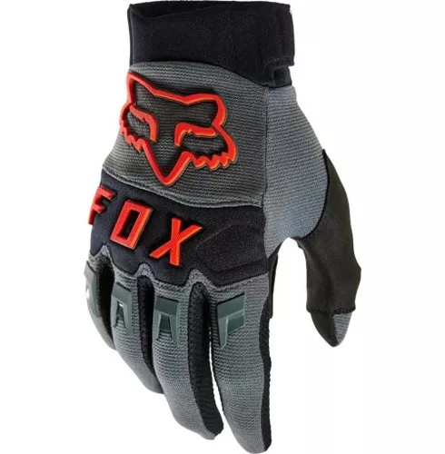

Motocross Fox Racing - Dirtpaw Ce $54.365
Los guantes Dirtpaw CE son confiables, resistentes y perfectos para tu próxima carrera. Confeccionados con tejidos resistentes y con una palma Clarino® para aumentar la sensibilidad del manillar, notarás la tranquilidad que te ofrece el TPR inyectado directamente en la parte superior de la mano y en los nudillos para mejorar la durabilidad y la protección.
Ls2 Dart 2 $ 74.999
GUANTE DART 2 H: - Es un guante de diseño moderno que aporta comodidad y protección al motociclista urbano. La protección en los nudillos, el slider en la palma, y la pared lateral en el dedo meñique son grandes aliados de este guante a nivel seguridad. - Posee touch screen en el dedo meñique, ajuste de velcro en la muñeca y tela con spandex entre los dedos, permitiéndote que manejes tu moto con todo el confort necesario.
Hawk Fit Camel Marga Motors $1000.415

Perfecta combinación de materiales de alto rendimiento para crear la nueva línea de guantes Hawk. Diseñados con un excelente calce para resguardarte de las bajas temperaturas en tus manos. Destacables por su nivel de aislamiento y elasticidad del neoprene para bloquear el clima húmedo y frío, manteniendo la destreza y control de tu moto.